Dog & cat grooming · Lakewood, Colorado
We treat your pet like our own.
A full-service grooming salon on Wadsworth Blvd. From shave-downs to nail trims and everything in between, we care about your pet’s comfort and your peace of mind.
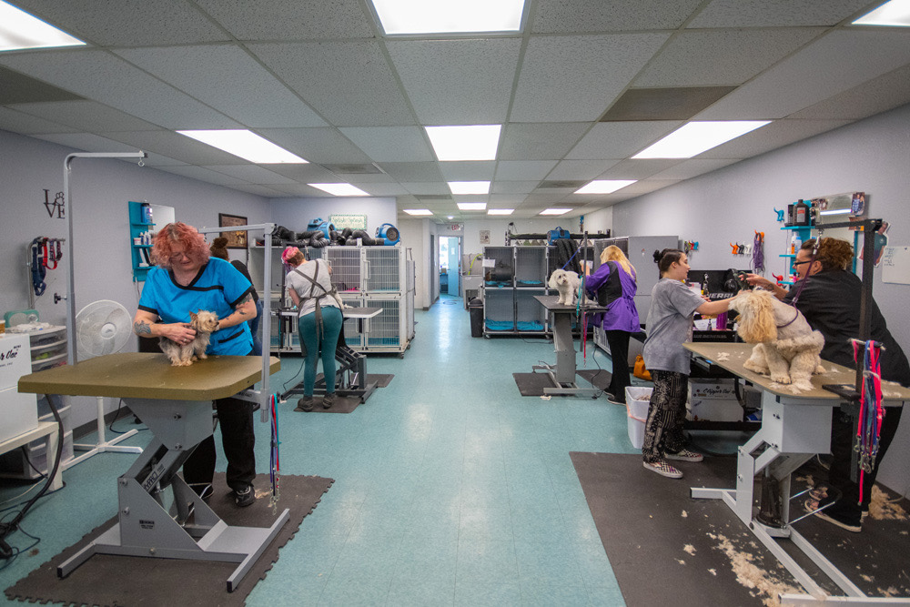
Welcome to Furry Friends
Making dogs & cats look and feel great is our passion.
We provide compassionate care to enhance the well-being of your pets by professionally and insightfully grooming them, with knowledge gained through experience, continued education and personal development.
Typically, we see your pets more than your vet does, and we will notify you immediately if we see any changes that need to be addressed. If needed, we can refer you to a local vet. We keep you informed of every decision regarding your pet’s well-being.
Meet the groomers →How a groom works
We’re with your pet every step of the way.
Check-in
A quick screening of your pet’s coat and general health, and the style that works best for them.
Brush & clip
Personalized to each pet: a thorough brush-out, or an initial shave if required.
Bath
Scrub-a-dub! Shampoo is gently massaged in to remove dirt, oil and debris.
Dry
Not one-size-fits-all: air- and towel-drying or non-heated hand-held dryers.
Final stage
Where the real transformation happens: a stylish, professional finish.
Grooming salon menu
A full range of services.
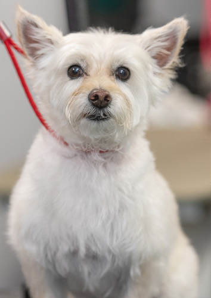
Bath & brush
For pets that need little to no trimming: oxygen-infused bath, blow dry, brush-out, nails and ears.
Dogs from $40+
Bath & haircut
Everything in the bath, plus light dematting and a professional haircut, as discussed with you.
Dogs from $75+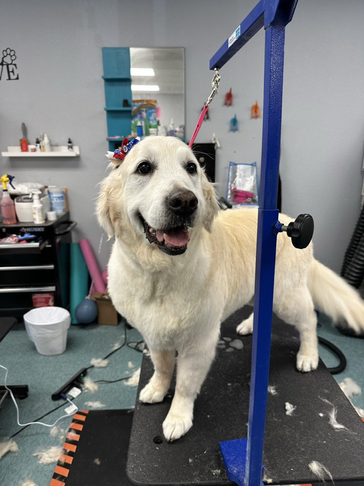
Skin & itch solutions
Hypoallergenic, oatmeal, whitening, deshedding, flea & tick and skunk shampoos, or your vet’s prescription.
Ask when you book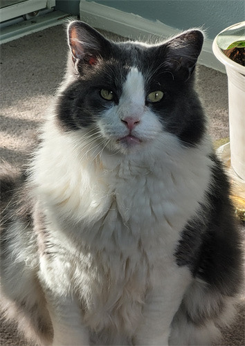
Cat grooming
Nail trims, brush-outs, lion cuts and other cuts, with baths and ear cleaning as add-ons.
Cats from $50+Our story
From grooming school in Loveland to our own salon.
Jen starts grooming
“I found that working with animals was my life’s path.” Jen is now our certified pet groomer and salon manager.
Dana finishes grooming school
Tired of call center jobs, Dana followed her passion, completed grooming school in Loveland and started grooming dogs and cats.
Dana takes over Furry Friends
In July 2017 Dana became the proud owner, and set out to build a team as passionate about animals as she is.
A whole salon of animal lovers
Certified groomers and bathers, a receptionist who first came in as a client, and four shop dogs. We keep training in person and online to stay current with new techniques and styles.
Gallery
Fresh from the salon.
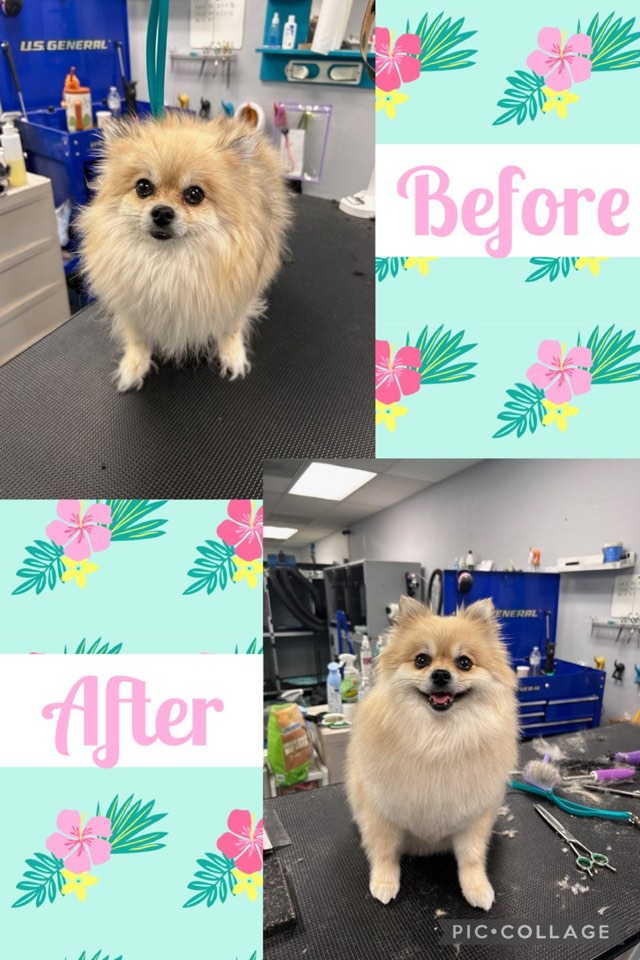
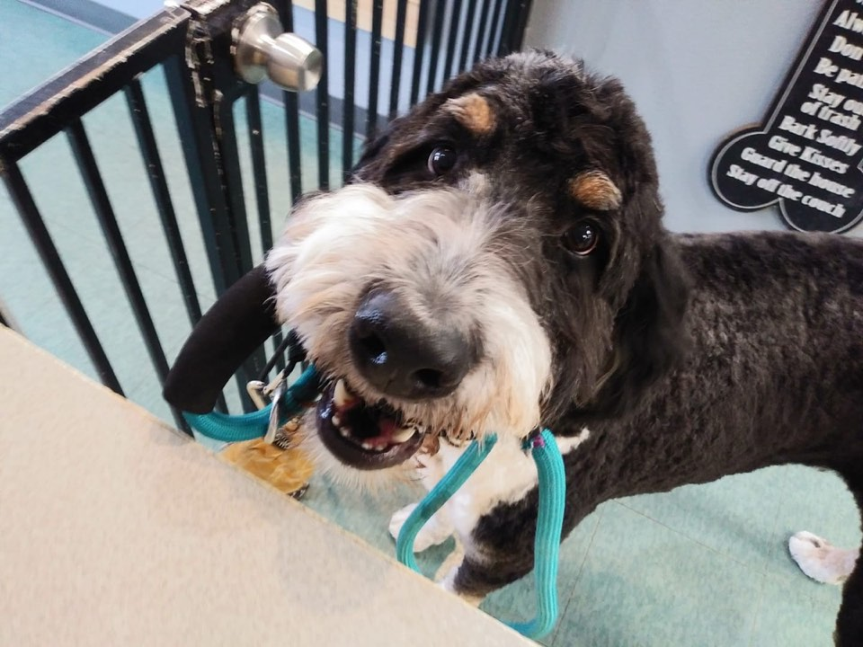
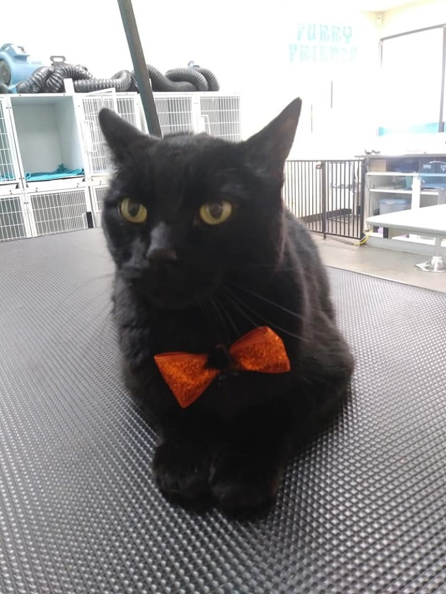
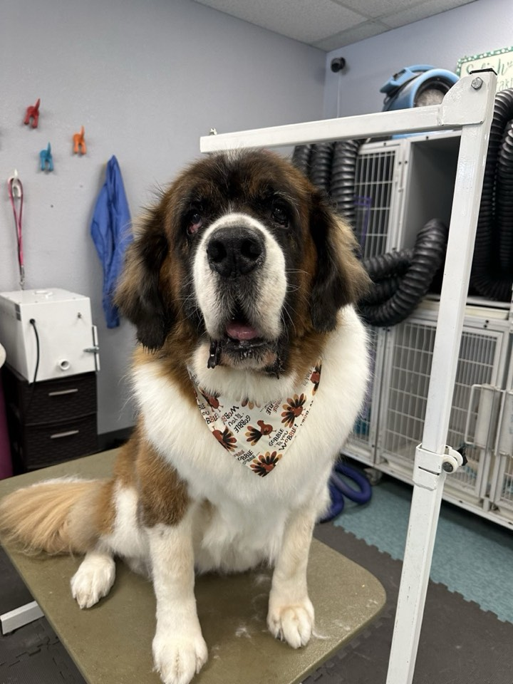
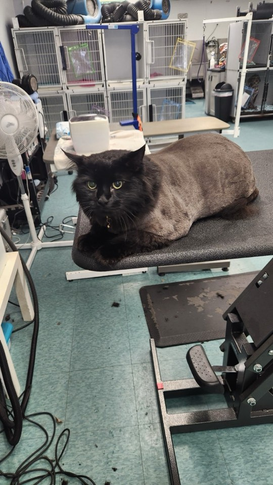
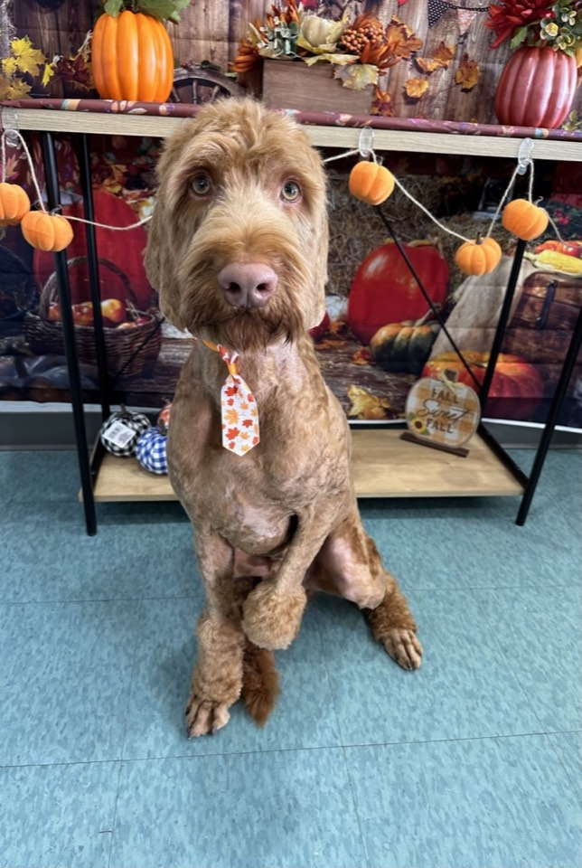
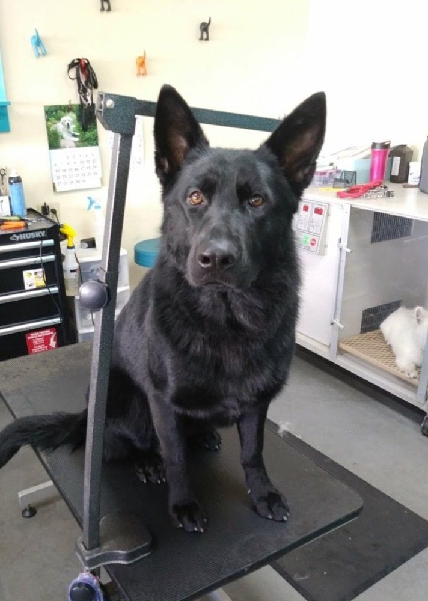
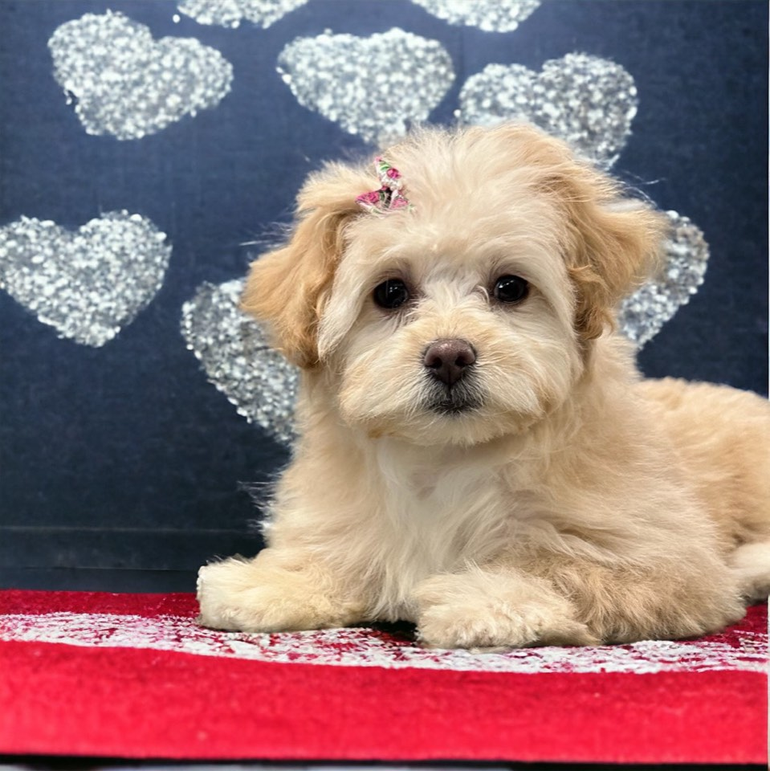
Testimonials
Trusted and loved by our clients.
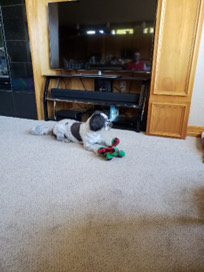
We love how good Bandit looks after a trip to Furry Friends! Dana does an awesome job and her crew is the best. We won’t go anywhere else.
— CA
This has been the best groomer in Lakewood. They are so helpful and accommodating. They do a great job with my dog and are able to get my large dog’s nails trimmed when no other groomer has been able to.
— Kandice T.
Great groomers, always do a great job on my large goldendoodle! And bonus, they normally can fit you in within a week or two.
— Sara K.
We have trusted our Baby Dogs Walt and Disney to Furry Friends for about 7 or 8 years now. They take such good care of them, especially our Disney, with his bad back.
— Chuck O.
Brought my cat in for a dry wash and nail clipping. Kitty came out looking good and smelling clean. Friendly service and great prices.
— Jose
Awesome place, they do exactly what you want. I have been taking my 2 dogs there for over 2 years, they always do great work.
— Denice S.
Jen is wonderful!! Great staff overall!
— Kathleen Pearson
Reviews as shared by clients on the Furry Friends website.
How long does a grooming appointment take?
Most appointments are completed within 4 hours, although some require a little more time. Want less waiting? Add Express ($15) and your dog is groomed straight through with minimal kennel time.
Can I get a same-day appointment or walk in?
We offer same-day appointments on most days we’re open, so please call ahead. Walk-ins are welcome for nail trims.
Which vaccinations do you need?
As of July 2025, Colorado’s PACFA program requires groomers to keep vaccination records on file before your pet’s appointment. Dogs: Rabies, Distemper, Parvo. Cats: FVRCP, Rabies. Email records to dduffy@furryfriendsco.com or bring them to your appointment. If your pet can’t be vaccinated for health reasons, PACFA requires a written statement from a licensed vet.
Will you groom a matted dog?
Yes, and without judgment. We follow a “humanity before vanity” philosophy: if mats are tight to the skin we’ll recommend shaving those areas, or the whole coat at the safest length possible. A matted dog release form applies and there may be an additional charge.
Do you groom cats?
Yes. Nail trims, brush-outs, lion cuts and other cuts, with baths and ear cleaning as add-ons. Please note that cats may not end with a completed service, depending on their temperament and frame of mind.
When should I pick up my pet?
We’ll call you as soon as your pet is finished. Because kennel space is limited, please pick up no later than an hour after the appointment is finished; otherwise additional fees may apply.
Visit or call
Bring your furry friend in.
Mon – Sat · 8 am – 4 pm
- HoursMonday – Saturday, 8:00 am – 4:00 pm,
or until the last furry friend goes home. Closed Sunday. - Phone(720) 328-2123
- New clientsComplete the client application & online booking form.